<title>Recency vs Frequency First Run</title>
<link rel="preconnect" href="https://fonts.googleapis.com">
<link rel="preconnect" href="https://fonts.gstatic.com" crossorigin>
<link rel="stylesheet" href="https://fonts.googleapis.com/css2?family=IBM+Plex+Mono:wght@400;500&family=IBM+Plex+Sans+Condensed:wght@500;600&family=IBM+Plex+Sans:ital,wght@0,400;0,500;0,600;1,400&display=swap">
<style>
/* Layout: a single reading column (lab-notebook report) with wide figure and table blocks that may scroll on their own. */
:root {
  --bg: #f7f8fa;
  --surface: #ffffff;
  --ink: #17202c;
  --muted: #5a6575;
  --rule: #d9dee6;
  --accent: #1f4fb8;
  --accent-soft: #e6edfb;
  --bayes: #6b5aa8;
  --good: #1d7a4a;
  --good-soft: #e3f3ea;
  --warn: #9a6200;
  --warn-soft: #fbf0dc;
  --bad: #b03a2e;
  --bad-soft: #f9e4e1;
  --font-display: "IBM Plex Sans Condensed", "Arial Narrow", system-ui, sans-serif;
  --font-body: "IBM Plex Sans", system-ui, -apple-system, "Segoe UI", sans-serif;
  --font-mono: "IBM Plex Mono", ui-monospace, "SFMono-Regular", Menlo, monospace;
  --step--1: 0.84rem;
  --step-0: 1rem;
  --step-1: 1.2rem;
  --step-2: 1.5rem;
  --step-3: 2.1rem;
}
@media (prefers-color-scheme: dark) {
  :root:not([data-theme="light"]) {
    --bg: #11151c; --surface: #181e27; --ink: #e4e8ef; --muted: #9aa5b5; --rule: #2c3542;
    --accent: #8fb0ff; --accent-soft: #1c2a47; --bayes: #b4a6ea;
    --good: #6fd19c; --good-soft: #15301f; --warn: #f0b85a; --warn-soft: #33270f;
    --bad: #f08a7e; --bad-soft: #3a1c19; color-scheme: dark;
  }
}
:root[data-theme="dark"] {
  --bg: #11151c; --surface: #181e27; --ink: #e4e8ef; --muted: #9aa5b5; --rule: #2c3542;
  --accent: #8fb0ff; --accent-soft: #1c2a47; --bayes: #b4a6ea;
  --good: #6fd19c; --good-soft: #15301f; --warn: #f0b85a; --warn-soft: #33270f;
  --bad: #f08a7e; --bad-soft: #3a1c19; color-scheme: dark;
}
* { box-sizing: border-box; }
body {
  background: var(--bg); color: var(--ink);
  font-family: var(--font-body); font-size: var(--step-0); line-height: 1.6;
  padding-inline: 16px; padding-block: 0 64px;
}
main { max-width: 760px; margin: 0 auto; display: flex; flex-direction: column; gap: 2.75rem; }
header { padding-block: 3rem 0; display: flex; flex-direction: column; gap: 0.75rem; }
.eyebrow { font-family: var(--font-mono); font-size: var(--step--1); color: var(--muted); letter-spacing: 0.04em; text-transform: uppercase; }
h1, h2, h3 { font-family: var(--font-display); font-weight: 600; text-wrap: balance; margin: 0; line-height: 1.2; }
h1 { font-size: var(--step-3); }
h2 { font-size: var(--step-2); padding-bottom: 0.4rem; border-bottom: 1px solid var(--rule); }
h3 { font-size: var(--step-1); font-weight: 500; }
p { margin: 0; max-width: 68ch; }
.meta { color: var(--muted); font-size: var(--step--1); }
section { display: flex; flex-direction: column; gap: 1rem; }
ul, ol { margin: 0; padding-left: 1.3rem; display: flex; flex-direction: column; gap: 0.45rem; max-width: 68ch; }
strong { font-weight: 600; }
code { font-family: var(--font-mono); font-size: 0.88em; background: var(--accent-soft); padding: 0.05em 0.3em; border-radius: 3px; }
var { font-family: var(--font-mono); font-style: normal; font-size: 0.92em; }
.summary { background: var(--surface); border: 1px solid var(--rule); border-left: 3px solid var(--accent); padding: 1.25rem 1.4rem; display: flex; flex-direction: column; gap: 0.8rem; }
.summary h2 { border: 0; padding: 0; font-size: var(--step-1); }
.claim { font-size: 1.08rem; line-height: 1.55; }
.rules { display: grid; grid-template-columns: repeat(auto-fit, minmax(260px, 1fr)); gap: 1rem; }
.rule { background: var(--surface); border: 1px solid var(--rule); padding: 1rem 1.1rem; display: flex; flex-direction: column; gap: 0.5rem; min-width: 0; }
.rule .tag { font-family: var(--font-mono); font-size: var(--step--1); color: var(--muted); }
.formula { font-family: var(--font-mono); font-size: 0.86rem; background: var(--bg); padding: 0.5rem 0.65rem; overflow-x: auto; white-space: nowrap; }
.table-wrap { overflow-x: auto; background: var(--surface); border: 1px solid var(--rule); }
table { border-collapse: collapse; width: 100%; font-size: 0.9rem; }
th, td { padding: 0.45rem 0.7rem; text-align: right; border-bottom: 1px solid var(--rule); white-space: nowrap; }
th:first-child, td:first-child { text-align: left; }
thead th { font-family: var(--font-display); font-weight: 600; font-size: 0.86rem; color: var(--muted); background: var(--bg); }
tbody tr:last-child td { border-bottom: 0; }
td { font-variant-numeric: tabular-nums; font-family: var(--font-mono); font-size: 0.84rem; }
td:first-child { font-family: var(--font-body); font-size: 0.9rem; }
td.txt { font-family: var(--font-body); font-size: 0.88rem; }
td.bayes, th.bayes { color: var(--bayes); }
tr.group td { font-family: var(--font-display); font-weight: 600; background: var(--bg); color: var(--ink); font-size: 0.86rem; }
.sd { color: var(--muted); }
.caption { font-size: var(--step--1); color: var(--muted); max-width: 72ch; }
figure { margin: 0; display: flex; flex-direction: column; gap: 0.6rem; }
figure .frame { background: #ffffff; border: 1px solid var(--rule); padding: 0.5rem; overflow-x: auto; }
figure img { display: block; width: 100%; height: auto; }
figure.wide .frame img { min-width: 640px; }
.score { display: flex; flex-direction: column; gap: 0.75rem; }
.verdict { background: var(--surface); border: 1px solid var(--rule); padding: 0.9rem 1.1rem; display: flex; flex-direction: column; gap: 0.4rem; }
.verdict-head { display: flex; flex-wrap: wrap; align-items: baseline; gap: 0.6rem; }
.verdict-head h3 { flex: 1 1 260px; min-width: 0; }
.pill { font-family: var(--font-mono); font-size: 0.76rem; padding: 0.15rem 0.55rem; border-radius: 999px; white-space: nowrap; }
.pill.good { color: var(--good); background: var(--good-soft); }
.pill.warn { color: var(--warn); background: var(--warn-soft); }
.pill.bad { color: var(--bad); background: var(--bad-soft); }
.callout { border: 1px solid var(--warn); background: var(--warn-soft); padding: 0.9rem 1.1rem; display: flex; flex-direction: column; gap: 0.4rem; }
.law { background: var(--surface); border: 1px solid var(--rule); padding: 1rem 1.1rem; display: flex; flex-direction: column; gap: 0.5rem; }
.law-head { display: flex; flex-wrap: wrap; align-items: baseline; gap: 0.6rem; }
.law-head h3 { flex: 1 1 260px; min-width: 0; }
.run-divider { font-family: var(--font-mono); font-size: var(--step--1); color: var(--muted); text-transform: uppercase; letter-spacing: 0.04em; border-top: 2px solid var(--ink); padding-top: 0.6rem; }
pre { margin: 0; background: var(--surface); border: 1px solid var(--rule); padding: 0.8rem 1rem; overflow-x: auto; font-family: var(--font-mono); font-size: 0.82rem; line-height: 1.55; }
a { color: var(--accent); }
a:focus-visible { outline: 2px solid var(--accent); outline-offset: 2px; }
footer { color: var(--muted); font-size: var(--step--1); border-top: 1px solid var(--rule); padding-top: 1rem; }
</style>

<main>
  <header>
    <div class="eyebrow">TOLLM project · run reports 1–5</div>
    <h1>Recency vs. frequency in induction heads: first results</h1>
    <p class="meta">Nirbhay Sharma, Gathik Jindal · updated 5 October 2026 · 123 trained models on one RTX A6000 (2 gate + 36 first run + 69 overnight + 16 scale runs), with 84 re-tested in run 3</p>
  </header>

  <div class="summary">
    <h2>Result after run 3</h2>
    <p class="claim">Small transformers on this task behave like a <strong>Bayes filter tuned to the wrong world</strong>: they act as if values change 3–14× more often than they do, and their typo rate is pulled toward about 0.2–0.3 (less so with RoPE). The decision is computed by late-layer attention heads that each work like a <strong>discounted counter</strong>. Turning a head's fading rate up or down moves the model's effective switch rate the predicted way. The trained fading rates sit at the minimum of ordinary-data loss, and calibrating the switch rate would cost loss, so the miscalibration is what training settles on for these heads (corrected by the audit; an earlier version called it "cheap"). What makes the heads add up to something Bayes-shaped rather than counter-shaped is that their attention is <strong>not purely distance-based</strong>: it also discounts typo-variant copies.</p>
    <ul>
      <li><strong>Behaviour.</strong> Bayes with fitted h′, ε′ is the best description for 75 of 84 models (held-out R² 0.85–0.95 vs 0.37–0.74 for a counter). Fitted on one probe layout, it predicts unseen spacings (R² ≈ 0.93) and the swapped layout, and refits to the same h′, ε′ in 97% of cases.</li>
      <li><strong>Not a generic property.</strong> Random sums of 1–3 counters are fit by a counter (R² ≈ 0.99) and only moderately by Bayes (≈ 0.74). Trained models are the reverse (0.94 vs 0.72).</li>
      <li><strong>Causal.</strong> Halving or doubling the heads' ALiBi slopes moves h′ from 0.055 to 0.030 or 0.109, monotonically in 56 of 57 models, while loss changes by only 0.006–0.016 nats. Removing all late heads removes the decision (−96%).</li>
      <li><strong>Laws.</strong> h′ ≈ 1.45·h<sup>0.74</sup>; logit ε′ ≈ −0.35 + 0.44·logit ε; each recent copy carries about half its exact Bayes evidence (median 0.46×, range 0.24–1.06; corrected by the audit).</li>
      <li><strong>Training and size.</strong> 3× longer training leaves h′ unchanged (×0.8–1.2). 2× width helps somewhat: ALiBi stays 2.9–5.3× too high, RoPE gets to 1.3–1.5×.</li>
      <li><strong>Theory confirmed.</strong> The oracle reproduces Prop. 2 (2.948 vs 2.944 nats per recent copy; old copies stop mattering after two).</li>
      <li><strong>Did not hold:</strong> the pre-registered copy-vs-control ablation (bad control); the "faster head → more recency" rule beyond 2 layers; the learned slope tracking h within mixed regimes. Two earlier explanations in this report were wrong and are corrected below.</li>
      <li><strong>Runs 4–5 (where the Bayes shape comes from): narrowed down, not solved.</strong> A typo-variant attention signal enters the copy heads' keys from one layer-0 head (84% of models), but removing it, or every layer-0 head except the previous-token head, leaves the Bayes shape intact. So it is computed inside the layer-1 copy heads from the previous-token match, distance and token identity. No closed-form counter reproduces it; slow ALiBi and RoPE heads' attention splits are moderately better fit by Bayes than by a counter.</li>
    </ul>
  </div>

  <section id="question">
    <h2>The question and the two rules</h2>
    <p>A continuation appears often but long ago (<var>c</var>, "Potter"), and a conflicting one appears rarely but recently (<var>w</var>, "Potyer"). Which one should be copied depends on the data: if values really change (switch rate <var>h</var>), the recent copy is informative; if copies are only corrupted (typo rate <var>ε</var>), the frequent one is.</p>
    <div class="rules">
      <div class="rule">
        <div class="tag">Prop. 1 · discounted counter</div>
        <p>A softmax head with distance penalty <var>λ·d</var> weighs each earlier copy by <var>e<sup>−λd</sup></var> and adds them up.</p>
        <div class="formula">pick c ⇔ log(n_c / n_w) &gt; λ·(d_c − d_w)</div>
        <p>Depends on the number of old copies; distance enters linearly, so preference falls off sharply.</p>
      </div>
      <div class="rule">
        <div class="tag">Prop. 2 · Bayes-optimal</div>
        <p>Under the switch-and-typo model, switch when a change in the gap <var>G</var> is more likely than <var>n_w</var> identical typos.</p>
        <div class="formula">pick w ⇔ log(h·G) &gt; log V − n_w·log((1−ε)/ε)</div>
        <p>Independent of old copies once there are two; the gap enters as <var>log G</var>, so preference shifts gradually.</p>
      </div>
    </div>
  </section>

  <section id="setup">
    <h2>Setup</h2>
    <ul>
      <li><strong>Task.</strong> 256 key–value pairs per sequence, 16 keys (Zipf-distributed), 64 values. Each key's hidden value is redrawn with probability <var>h</var> per pair; each observed value is a typo with probability <var>ε</var> (structured <var>z+1</var> unless stated).</li>
      <li><strong>Bayes oracle.</strong> Exact forward filter per key, unit-tested against brute-force enumeration.</li>
      <li><strong>Models.</strong> Pre-LayerNorm transformers, width 128, 4 heads. L2 = 2-layer attention-only, L2+MLP, L3 = 3-layer attention-only. Positional encoding: learnable ALiBi unless stated, plus RoPE and learned absolute positions in the control. 20,000 steps on fresh data, 3 seeds per setting.</li>
      <li><strong>Probes.</strong> For a fresh key: <var>n_c</var> ∈ {1, 2, 4, 8} copies of <var>c</var>, a gap of <var>G</var> ∈ {2, …, 128} pairs, <var>n_w</var> ∈ {1, …, 4} copies of <var>w</var>, then the query; 256 random fills per cell. We compare log p(c)/p(w) from the model with the oracle's.</li>
      <li><strong>Measures.</strong> <em>Cliff</em>: the largest fall in log-odds when the gap doubles (how abrupt the switch is). <em>G*</em>: the gap where log-odds cross zero. <em>Per-copy weight</em>: how much one extra recent copy shrinks ln G*.</li>
    </ul>
  </section>

  <div class="run-divider">Run 5 · inside the copy heads · 5 October · 70 models, no new training</div>

  <section id="run5">
    <h2>Pre-registered tests, run 5</h2>
    <p>Predictions in the plan (§16), written before any run-5 code ran. <strong>5A:</strong> remove every layer-0 head except the previous-token head, together (per path and everywhere) and in pairs. <strong>5B:</strong> split each slow copy head's attention score into a distance part and a content part q·k, and attribute the content part to its upstream sources (token embedding, previous-token head, other layer-0 heads), key side and query side. The decomposition reproduces the model's attention to within 5 × 10⁻⁵.</p>
    <div class="table-wrap">
      <table>
        <thead><tr><th>Test</th><th>Prediction</th><th>Result</th><th>Verdict</th></tr></thead>
        <tbody>
          <tr><td>5A-1 · Induction without the content heads</td><td class="txt">still works (loss + &lt; 1 nat) in ≥ 2/3 of models</td><td class="txt">89% of 70 (median +0.22 nats); learned-position models break (+1.07)</td><td><span class="pill good">passed</span></td></tr>
          <tr><td>5A-2 · Then the Bayes advantage disappears</td><td class="txt">R² gap below 0.05 in ≥ 2/3 of working models</td><td class="txt">in 8%; for ALiBi and RoPE the gap grows (0.24 → 0.39), Bayes fit 0.95</td><td><span class="pill bad">failed</span></td></tr>
          <tr><td>5B-1 · Content part of the split depends on the gap</td><td class="txt">range &gt; 1 nat over G = 2…64 in ≥ 2/3 of models</td><td class="txt">64% (median 1.53 nats; distance part 6.7 nats)</td><td><span class="pill bad">failed narrowly</span></td></tr>
          <tr><td>5B-2 · That dependence comes from layer-0 heads at the keys</td><td class="txt">≥ 50% of it</td><td class="txt">median 0.58, but ≥ 0.5 in only 63% of models (ALiBi: other layer-0 heads 0.78; RoPE: previous-token head 0.56)</td><td><span class="pill warn">borderline</span></td></tr>
        </tbody>
      </table>
    </div>
    <h3>What we learn</h3>
    <ul>
      <li><strong>The Bayes shape is computed inside the layer-1 copy heads.</strong> With only the previous-token head left in layer 0, ALiBi and RoPE models still predict well and remain clearly Bayes-like. The ingredients left are: which positions follow the current key (from the previous-token head), how far away they are, and which value token sits there.</li>
      <li><strong>The upstream content signal is real but unnecessary for the Bayes shape.</strong> In intact ALiBi models the gap-dependent part of the content score comes mostly from other layer-0 heads on the key side, yet removing those heads (here, and in run 4's A3) leaves the Bayes shape in place.</li>
      <li><strong>Learned-position models are different:</strong> they need their other layer-0 heads to do induction at all, presumably for position information.</li>
      <li><strong>What remains open:</strong> how the layer-1 heads, using only the previous-token match, distance and token identity, produce an attention split that a Bayes formula fits better than a counter. The decomposition shows the content part of the score moves by about 1.5 nats across gaps, enough to bend a distance kernel, but we have not yet isolated what in the query–key product does it.</li>
    </ul>
  </section>

  <div class="run-divider">Run 4 · where does the Bayes shape come from? · 5 October · 70 models, no new training</div>

  <section id="run4">
    <h2>Pre-registered tests, run 4</h2>
    <p>Two questions, with predictions written into the plan (§15) before any run-4 code ran. <strong>A:</strong> in 2-layer attention-only models, which layer-0 head tells the copy heads that a copy is a typo-variant, and does removing that signal make the model counter-like? Each layer-0 head was mean-ablated separately on the copy heads' query, key and value paths, or everywhere (70 models, including the width-256 and 60k-step ones). <strong>B:</strong> does a counter with the measured content terms, or a prediction built from each head's measured kernel, reproduce the models as well as Bayes(h′, ε′)?</p>
    <div class="table-wrap">
      <table>
        <thead><tr><th>Test</th><th>Prediction</th><th>Result</th><th>Verdict</th></tr></thead>
        <tbody>
          <tr><td>A1 · Previous-token head, key path</td><td class="txt">breaks induction (loss + &gt; 1 nat)</td><td class="txt">in 99% of 70 models (median +2.57 nats)</td><td><span class="pill good">passed</span></td></tr>
          <tr><td>A2 · One other layer-0 head carries the typo signal</td><td class="txt">removes ≥ 50% of the typo-variant discount in ≥ 2/3 of models</td><td class="txt">in 84% of models (83% with the model still working, median loss +0.02); key path in 51 of 58, query path in 7</td><td><span class="pill good">passed</span></td></tr>
          <tr><td>A3 · Without it, behaviour turns counter-like</td><td class="txt">swapped-layout n_c slope rises ≥ 0.2; Bayes advantage shrinks</td><td class="txt">slope rises ≥ 0.2 in 7% (median +0.01); Bayes advantage unchanged (median −0.005); h′ ×0.93</td><td><span class="pill bad">failed</span></td></tr>
          <tr><td>B1 · Content-aware counter (8 parameters)</td><td class="txt">within 0.03 R² of Bayes on spacing 2/8; swapped error ≤ 1.5×</td><td class="txt">R² gap 0.106; swapped-layout error 4.4× Bayes(h′, ε′)'s</td><td><span class="pill bad">failed</span></td></tr>
          <tr><td>B2 · Built from measured head kernels (3 parameters)</td><td class="txt">median R² ≥ 0.8 on spacing 2/8 (against: &lt; 0.6)</td><td class="txt">0.365</td><td><span class="pill bad">failed</span></td></tr>
        </tbody>
      </table>
    </div>
    <figure class="wide">
      <div class="frame"></div>
      <figcaption class="caption">Left: best non-previous-token layer-0 head per model, path by path (values above 1 mean the discount reversed). Middle: models where that head removes at least half the discount. Right: every copy head in the 54 two-layer models with run-3 data.</figcaption>
    </figure>

    <h3>What we learn</h3>
    <ul>
      <li><strong>The typo-variant attention discount has a clear source</strong>: a single layer-0 head writing into the residual that the copy heads read as keys. Removing it costs almost no loss.</li>
      <li><strong>But that discount is not what makes the model Bayes-like.</strong> Without it, the swapped-layout behaviour, the Bayes-versus-counter gap and h′ are all essentially unchanged, and no single layer-0 head on any path makes the model counter-like (the largest swapped-layout change reaches the threshold in only 10% of models). The pre-registered "against" outcome applies: the Bayes-like typo handling is spread out or comes from what heads write.</li>
      <li><strong>B2's failure is about describing attention, not the readout.</strong> <em>(Post-hoc diagnostic.)</em> Each head's fitted kernel (distance plus fixed content offsets) reproduces its measured attention split badly (median R² −0.49), while the same readout fed with the measured attention predicts behaviour at R² 0.97. The heads allocate attention in a way that a distance-plus-offsets kernel does not capture.</li>
      <li><strong>Slow ALiBi and RoPE heads split attention Bayes-like; other heads like counters.</strong> <em>(Post-hoc P1, corrected in run 5.)</em> The first version compared Bayes with a bounded counter formula, which suits the model's output but not a head's log attention split, and so overstated the difference (0.92 vs 0.43). Against the correct log-ratio counter, held-out R² is: slow ALiBi heads, Bayes 0.75 vs counter 0.53; slow RoPE heads, 0.84 vs 0.58; mid and fast ALiBi heads, counter better (0.92, 0.99); learned-position heads, counter as good or better. The counter does at least as well as Bayes for 56% of 197 heads.</li>
      <li><strong>Two post-hoc ideas did not hold.</strong> Removing the fastest head does not bring h′ toward the truth in ALiBi models (closer in only 7% of 42); and the output weights show no clearly typo-specific vote (a copied value votes about as much for its +1 neighbour as for its −1 neighbour; only half the heads prefer −1).</li>
    </ul>
    <p><strong>Where this leaves the mechanism:</strong> we can say <em>which</em> heads carry the decision, that their fading rates set h′ causally, and that the slow heads' attention split is Bayes-shaped. We cannot yet say <em>how</em> the split is computed: it is not a closed-form distance-plus-content kernel, and it does not hinge on any single upstream head.</p>
  </section>

  <div class="run-divider">Run 3 · testing our own claims · 5 October · 84 models re-tested + 16 new</div>

  <section id="run3">
    <h2>Pre-registered tests</h2>
    <p>Before running anything in run 3 we wrote down, in the research plan, what each test should show and what result would count against us. The scorecard below grades each test against that text. Post-hoc analyses are labelled as such.</p>
    <div class="table-wrap">
      <table>
        <thead><tr><th>Test</th><th>Prediction</th><th>Result</th><th>Verdict</th></tr></thead>
        <tbody>
          <tr><td>1 · Ablate copy heads vs control heads</td><td class="txt">copy: |log-odds| falls &gt; 70%; control: changes &lt; 20%</td><td class="txt">copy: median −43% (&gt; 70% in 29% of models); control: median change 32%</td><td><span class="pill bad">failed</span></td></tr>
          <tr><td>1b · Ablate all late heads <em>(post-hoc)</em></td><td class="txt">—</td><td class="txt">decision removed in every model (median −96%); repeat-sighting loss rises to about ln 64</td><td><span class="pill good">decision lives here</span></td></tr>
          <tr><td>1c · Single heads vs fading rate <em>(post-hoc)</em></td><td class="txt">removing a fast head shifts toward the old value</td><td class="txt">2-layer: positive in 83–100% of models (median within-model ρ 0.4–1.0); 3-layer: no (ρ ≈ −0.6 to 0.2)</td><td><span class="pill warn">2 layers only</span></td></tr>
          <tr><td>2 · Slope surgery (ALiBi)</td><td class="txt">×2 → h′ up, G* down; ×0.5 → opposite; monotone in all seeds</td><td class="txt">h′ monotone in 56 of 57 models (0.030 / 0.055 / 0.109); G* monotone in 39 of 39. The one exception is an h′–ε′ fit trade-off; the audit notes that "all seeds" is strictly not met</td><td><span class="pill warn">passed, 1 exception</span></td></tr>
          <tr><td>3 · New probe layouts</td><td class="txt">Bayes(h′, ε′) predicts better than any counter; refit within 2×</td><td class="txt">wins 90% of 168 model × layout cases and 94% on the swapped layout; refit within 2× in 97%</td><td><span class="pill good">passed</span></td></tr>
          <tr><td>4 · Content vs distance</td><td class="txt">no direction predicted</td><td class="txt">typo-variant copies get less attention in 79–100% of heads; RoPE and learned-position heads also down-weight duplicates</td><td><span class="pill good">new finding</span></td></tr>
          <tr><td>5 · Random counter sums</td><td class="txt">if these are also Bayes-shaped, the claim weakens</td><td class="txt">they are counter-shaped (R² 0.99 vs 0.74); models are Bayes-shaped (0.94 vs 0.72)</td><td><span class="pill good">claim stands</span></td></tr>
          <tr><td>6 · Longer training, wider model</td><td class="txt">h′ moves toward h by &lt; 2×; against: within 1.5× of h</td><td class="txt">3× training: ×0.8–1.2; 2× width: ×1.1–1.6. ALiBi stays 2.9–5.3× of h; RoPE + width reaches 1.3× (C) and 1.5× (D)</td><td><span class="pill warn">ALiBi yes; RoPE nearly closes</span></td></tr>
        </tbody>
      </table>
    </div>

    <h3>Why test 1 failed</h3>
    <p>The "control" heads were chosen as the late heads that carry the least <em>variance</em> of the decision across probe cells. In most models they still attend almost entirely to the copies, only with a much faster fading rate, so their contribution is large but nearly constant across cells. Removing the "copy" heads does not zero the decision; it turns it into a constant preference for the recent value (correlation with the original pattern 0.1–0.6 in 2-layer models). The pre-registered measure, the size of |log-odds|, was the wrong measure for "the decision is gone". We report the test as failed and draw the causal conclusion from tests 1b and 2 instead.</p>

    <figure class="wide">
      <div class="frame">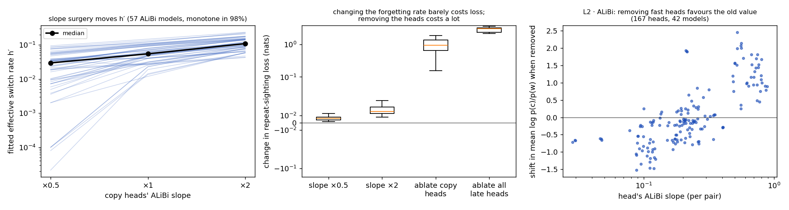</div>
      <figcaption class="caption">Left and middle: all 57 ALiBi models. Right: every late head that puts most of its attention on the copies, in 2-layer attention-only ALiBi models (including the 6 enriched ones).</figcaption>
    </figure>
    <p><strong>Slope surgery is the clearest causal result.</strong> The miscalibration lives in the heads' fading rates, and the loss on ordinary data is almost flat in those rates (+0.006 nats for ×0.5, +0.016 for ×2). <em>(Corrected by the verification audit.)</em> Nearby, the loss is flat, but the learned rate is its minimum: in all 85 ALiBi models checked with a finer sweep (×0.25 to ×4), ordinary-data loss is lowest at the trained slope, and reaching the calibrated switch rate (about ×0.44 on the slopes) costs a median +0.044 nats, about three times the models' excess loss. The miscalibration is loss-optimal for these heads, not slack that training failed to remove.</p>

    <figure class="wide">
      <div class="frame">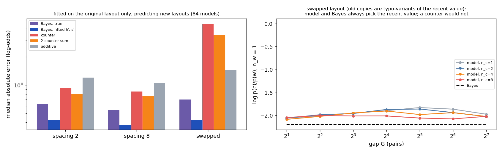</div>
      <figcaption class="caption">Each description was fitted on the original layout only. In the swapped layout the old copies are typo-variants of the recent value, so Bayes always picks the recent value. The model does too, even against 8 old copies at a short gap; every counter fit predicts it should flip.</figcaption>
    </figure>

    <figure>
      <div class="frame">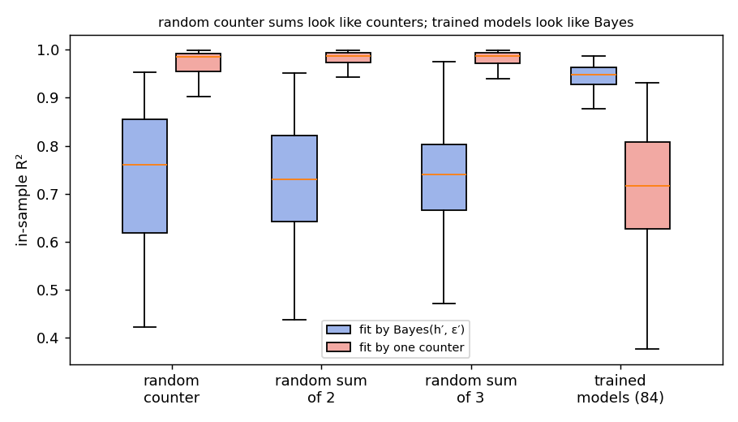</div>
      <figcaption class="caption">200 random surfaces per kind, with cell noise similar to the models' probes.</figcaption>
    </figure>

    <h3>What the heads attend to besides distance</h3>
    <p>Fitting each head's attention to every copy within a sequence, using both the normal and the swapped layout so that "recent" and "typo-variant" are separated:</p>
    <ul>
      <li><strong>Typo-variant copies get less attention</strong> than their distance predicts, in 79–100% of heads depending on architecture (−0.28 to −0.45 in log-attention for 2-layer attention-only models, −0.08 with MLPs).</li>
      <li><strong>Recent copies also get extra attention</strong> beyond what an exponential kernel predicts (positive in 75–100% of heads). For ALiBi this bump is small (about +0.3) and, in the normal layout, cancels against the typo-variant discount; for RoPE and learned positions it is large (+1.6 to +3.9), because their kernels are not exponential.</li>
      <li><strong>RoPE and learned-position heads give each copy less attention when more copies share its value</strong> (per-copy attention ∝ n<sup>−0.35</sup> to n<sup>−0.68</sup>), so the total pull of the old value grows slowly with the number of old copies. ALiBi heads hardly do this (close to n<sup>0</sup>). This matches RoPE models ignoring extra old copies, but the link is only suggestive: across all 84 models it correlates with sensitivity to the second old copy (ρ = 0.40, p = 0.0002), not with copies 2 → 4 (ρ = 0.14), and not within an encoding.</li>
    </ul>

    <figure>
      <div class="frame">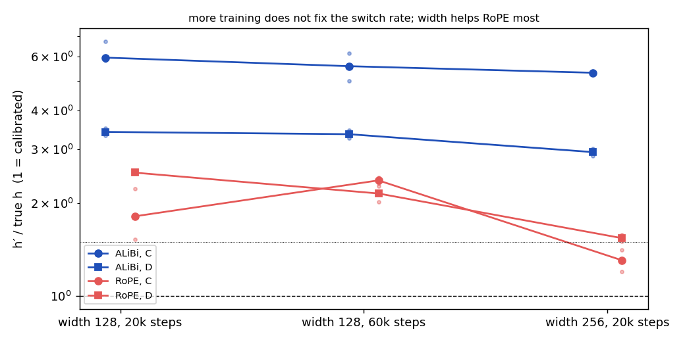</div>
      <figcaption class="caption">2 seeds per new variant, 3 for the baseline. 2× width roughly halves ordinary-data loss (0.014 → 0.0075 nats at C with ALiBi), 3× training changes it little (0.012–0.016); h′ barely moves in either case.</figcaption>
    </figure>

    <div class="callout">
      <strong>Corrections to earlier versions of this report</strong>
      <ul>
        <li><strong>"Two or three counter heads with different fading rates add up to the Bayes shape" was wrong.</strong> Random sums of counters still look like a single counter (test 5). The Bayes-like part comes from attention that also depends on content (test 4), plus what the heads write.</li>
        <li><strong>"Conflicts are rare in training" was wrong.</strong> In ordinary training data, 57–88% of repeat sightings already have a conflicting history, and the Bayes answer differs from "copy the most recent value" at 4–14% of positions. The better explanation, from the audit's finer slope sweep, is that the fading rate that is best for ordinary data implies a too-high switch rate on conflicts; calibrating it would cost ordinary-data loss.</li>
        <li><strong>The "nearest-copy discount" was mostly a typo-variant discount</strong> plus a recency bump in the distance kernel, now separated by the swapped layout.</li>
      </ul>
    </div>
  </section>

  <div class="run-divider">Analysis 3 · which rule, and how · 5 October · no new training</div>

  <section id="rules-fit">
    <h2>Which rule do the models implement?</h2>
    <p>For every model with a non-flat probe surface (87 of 105), we fitted five formulas to its 112 probe log-odds and scored each on gaps it had not seen (fit on 6 of the 7 gap values, predict the 7th):</p>
    <div class="table-wrap">
      <table>
        <thead><tr><th>Formula</th><th>What it says</th><th>Parameters</th></tr></thead>
        <tbody>
          <tr><td>Bayes, true h, ε</td><td class="txt">the exact optimal rule, rescaled</td><td>2</td></tr>
          <tr><td>Bayes, fitted h′, ε′</td><td class="txt">the optimal rule for the wrong switch and typo rates</td><td>4</td></tr>
          <tr><td>Prop. 1 counter (exponential)</td><td class="txt">one head, normalized attention, decay λ</td><td>5</td></tr>
          <tr><td>Counter (power law)</td><td class="txt">the same with attention ∝ d<sup>−α</sup></td><td>5</td></tr>
          <tr><td>Additive evidence</td><td class="txt">unnormalized sum with separate decays for old and recent copies</td><td>5</td></tr>
        </tbody>
      </table>
    </div>
    <figure class="wide">
      <div class="frame">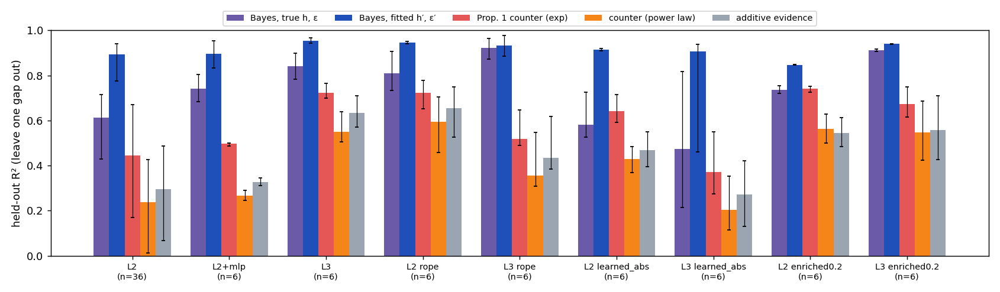</div>
      <figcaption class="caption">Held-out R², median and interquartile range over models. Our fast Bayes implementation reproduces the stored oracle values to within 3 × 10⁻¹⁵.</figcaption>
    </figure>
    <div class="table-wrap">
      <table>
        <thead><tr><th>Best held-out fit</th><th>Bayes, fitted h′, ε′</th><th>Bayes, true</th><th>Counter</th></tr></thead>
        <tbody>
          <tr><td>84 structured-typo models</td><td>75</td><td>8</td><td>1</td></tr>
          <tr><td>3 uniform-typo models (counting optimal)</td><td>0</td><td>0</td><td>3</td></tr>
        </tbody>
      </table>
    </div>
    <figure class="wide">
      <div class="frame">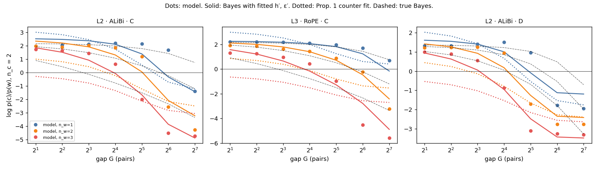</div>
      <figcaption class="caption">Three example models at n_c = 2. The fitted Bayes curves (solid) track the model (dots); the counter (dotted) cannot produce the right spacing between 1, 2 and 3 recent copies. The dashed lines are the true Bayes curves.</figcaption>
    </figure>

    <h3>The fitted parameters follow a simple law</h3>
    <figure class="wide">
      <div class="frame"></div>
      <figcaption class="caption">L2 with ALiBi, median of 3 seeds per setting (seed ranges are tight; see table).</figcaption>
    </figure>
    <div class="formula">h′ ≈ 1.45 · h<sup>0.74</sup>  (r = 0.89)        logit ε′ ≈ −0.35 + 0.44 · logit ε  (r = 0.82)</div>
    <p>The models always overestimate how often values change (2.8–14×, most when changes are rare) and pull the typo rate toward about 0.25–0.35. The first makes them abandon the old value too soon at long gaps, which is the cliff. The second shrinks the evidence carried by each recent copy, which is the 0.31 per-copy law.</p>
    <div class="table-wrap">
      <table>
        <thead><tr><th>Effective h′ / ε′</th><th>C (true 0.01 / 0.1)</th><th>D (true 0.03 / 0.2)</th></tr></thead>
        <tbody>
          <tr><td>L2 · ALiBi</td><td>0.060 / 0.23</td><td>0.102 / 0.26</td></tr>
          <tr><td>L2 + MLP</td><td>0.050 / 0.23</td><td>0.080 / 0.28</td></tr>
          <tr><td>L3 · ALiBi</td><td>0.032 / 0.11</td><td>0.064 / 0.17</td></tr>
          <tr><td>L2 · RoPE</td><td>0.018 / 0.08</td><td>0.076 / 0.19</td></tr>
          <tr><td>L3 · RoPE</td><td>0.018 / 0.11</td><td>0.049 / 0.21</td></tr>
          <tr><td>L2 · ALiBi · enriched</td><td>0.040 / 0.15</td><td>0.092 / 0.31</td></tr>
        </tbody>
      </table>
    </div>
    <p class="caption">Median of 3 seeds. RoPE and depth bring the effective parameters closest to the true ones; L3 with RoPE is within about 2× on h at both points. The fitted Bayes curve is usually stretched by 1.0–2.1 (up to 3.8 at h = 0.003; below 1 for enriched models), so the models are mostly more confident than the rule they approximate. Fits are weakest at h = 0.003 with ε ≥ 0.2 (held-out R² 0.53–0.60) and for L3 with learned positions at C (0.32).</p>

    <h2>How is the decision computed?</h2>
    <p>For 84 mixed-regime models we split the logit difference logit(c) − logit(w) at the query exactly into the contributions of the embeddings, every attention head and every MLP (the final LayerNorm is linearized at the actual residual; the parts reproduce the model to within 1.7 × 10⁻⁴). For each head we also measured its attention to the old and the recent copies.</p>
    <figure class="wide">
      <div class="frame">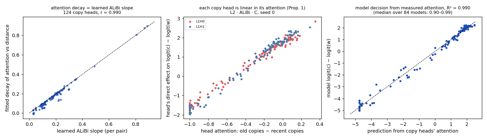</div>
      <figcaption class="caption">Left: all ALiBi copy heads. Middle and right: one model (L2 · ALiBi · C, seed 0).</figcaption>
    </figure>
    <div class="table-wrap">
      <table>
        <thead><tr><th>Architecture</th><th>Copy heads</th><th>Share of decision</th><th>Head output linear in attention (median R²)</th><th>Decision from measured attention (median R²)</th></tr></thead>
        <tbody>
          <tr><td>L2 · ALiBi (36)</td><td>2</td><td>1.00</td><td>0.98</td><td>0.98</td></tr>
          <tr><td>L3 · ALiBi (6)</td><td>2</td><td>0.93</td><td>0.97</td><td>0.98</td></tr>
          <tr><td>L2 · RoPE (6)</td><td>2.5</td><td>0.98</td><td>0.96</td><td>0.99</td></tr>
          <tr><td>L3 · RoPE (6)</td><td>3</td><td>0.93</td><td>0.93</td><td>0.97</td></tr>
          <tr><td>L2 · learned abs (6)</td><td>3</td><td>0.97</td><td>0.96</td><td>0.98</td></tr>
          <tr><td>L3 · learned abs (6)</td><td>3</td><td>0.95</td><td>0.84</td><td>0.90</td></tr>
          <tr><td>L2 · enriched (6)</td><td>3</td><td>0.94</td><td>0.94</td><td>0.97</td></tr>
          <tr><td>L3 · enriched (6)</td><td>3</td><td>0.91</td><td>0.98</td><td>0.98</td></tr>
          <tr><td>L2 + MLP (6)</td><td>0 (final MLP 0.89–0.94)</td><td>—</td><td>—</td><td>0.90 (all heads)</td></tr>
        </tbody>
      </table>
    </div>
    <p class="caption">A copy head carries at least 10% of the decision variance. Copy heads put 97–100% of their attention on the copies, and their output comes entirely from those positions. In MLP models the final MLP carries the decision directly, but it reads the heads: their measured attention still predicts 90% of it.</p>
    <ul>
      <li><strong>Each copy head is a Prop. 1 counter:</strong> its contribution is γ·(A_c − A_w) + constant, where A_c and A_w are its attention to the old and recent copies.</li>
      <li><strong>ALiBi heads have an exponential kernel equal to their learned slope</strong> (124 heads, r = 0.990, median ratio 0.96; the exponential beats the power law in every ALiBi head). RoPE and learned-position heads learn other shapes: neither form wins consistently (the exponential is better in 38–79% of heads).</li>
      <li><strong>Why the single-counter formula fails on behaviour:</strong> <em>(corrected in run 3)</em> not because several heads with different fading rates are summed; random counter sums still look like counters. The heads' attention also depends on content, for example less attention to typo-variant copies, and that is what a distance-only counter cannot express.</li>
    </ul>
  </section>

  <div class="run-divider">Run 2 · overnight, 5 October · 69 runs</div>

  <section id="run2">
    <h2>What the overnight run tested</h2>
    <div class="table-wrap">
      <table>
        <thead><tr><th>Experiment</th><th>Question</th><th>Runs</th></tr></thead>
        <tbody>
          <tr><td>Positional-encoding control</td><td class="txt">Is the abrupt switch an artifact of ALiBi?</td><td>24</td></tr>
          <tr><td>Conflict-enriched training</td><td class="txt">Is it just too few conflicts in training?</td><td>12</td></tr>
          <tr><td>Uniform-typo corner</td><td class="txt">Do models count when counting is optimal?</td><td>3</td></tr>
          <tr><td>(h, ε) grid, L2</td><td class="txt">How do the boundary and evidence weights vary across 12 settings?</td><td>30</td></tr>
        </tbody>
      </table>
    </div>
    <p class="caption">No-positional-encoding models were dropped before launch: they had not converged by step 5,000 (1.2–1.6 nats above Bayes and getting worse), so they could not serve as a control. RoPE replaced them.</p>

    <h3>1 · The abrupt switch is not an ALiBi artifact</h3>
    <figure class="wide">
      <div class="frame">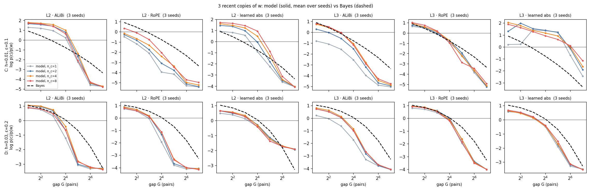</div>
      <figcaption class="caption">Three recent copies of w. Solid lines are models (mean of 3 seeds; colours are n_c = 1, 2, 4, 8), the dashed line is Bayes. With every encoding, the models end far more confident in w than Bayes at long gaps. The exception is L2 with learned positions at D, which is flatter than Bayes.</figcaption>
    </figure>
    <div class="table-wrap">
      <table>
        <thead><tr><th>Cliff (steepest drop per doubling)</th><th class="bayes">Bayes</th><th>ALiBi</th><th>RoPE</th><th>Learned abs</th></tr></thead>
        <tbody>
          <tr class="group"><td colspan="5">C · h = 0.01, ε = 0.1</td></tr>
          <tr><td>L2</td><td class="bayes">0.90</td><td>3.14 <span class="sd">± 0.05</span></td><td>1.61 <span class="sd">± 0.05</span></td><td>2.20 <span class="sd">± 0.17</span></td></tr>
          <tr><td>L3</td><td class="bayes">0.90</td><td>1.59 <span class="sd">± 0.16</span></td><td>1.78 <span class="sd">± 0.34</span></td><td>1.75 <span class="sd">± 0.39</span></td></tr>
          <tr class="group"><td colspan="5">D · h = 0.03, ε = 0.2</td></tr>
          <tr><td>L2</td><td class="bayes">1.37</td><td>2.25 <span class="sd">± 0.05</span></td><td>1.76 <span class="sd">± 0.07</span></td><td>0.91 <span class="sd">± 0.18</span></td></tr>
          <tr><td>L3</td><td class="bayes">1.37</td><td>1.62 <span class="sd">± 0.10</span></td><td>1.77 <span class="sd">± 0.18</span></td><td>1.57 <span class="sd">± 0.12</span></td></tr>
        </tbody>
      </table>
    </div>
    <div class="table-wrap">
      <table>
        <thead><tr><th>Other measures</th><th>ALiBi</th><th>RoPE</th><th>Learned abs</th></tr></thead>
        <tbody>
          <tr class="group"><td colspan="4">Excess loss over Bayes on ordinary data (nats), C / D</td></tr>
          <tr><td>L2</td><td>0.016 / 0.021</td><td>0.009 / 0.015</td><td>0.020 / 0.023</td></tr>
          <tr><td>L3</td><td>0.005 / 0.005</td><td>0.003 / 0.005</td><td>0.007 / 0.006</td></tr>
          <tr class="group"><td colspan="4">Probe decisions agreeing with Bayes, C / D</td></tr>
          <tr><td>L2</td><td>78% / 87%</td><td>91% / 86%</td><td>75% / 80%</td></tr>
          <tr><td>L3</td><td>92% / 82%</td><td>90% / 94%</td><td>61% / 88%</td></tr>
          <tr class="group"><td colspan="4">Effect of a 2nd old copy (Bayes: 0.061 / 0.075), C / D</td></tr>
          <tr><td>L2</td><td>0.32 / 0.19</td><td>0.24 / 0.15</td><td>0.32 / 0.08</td></tr>
          <tr><td>L3</td><td>0.49 / 0.29</td><td>0.07 / 0.10</td><td>0.44 / 0.06</td></tr>
        </tbody>
      </table>
    </div>
    <p class="caption">ALiBi exaggerates the cliff for 2-layer models, but every other combination except one is still 1.15–2.4× steeper than Bayes. RoPE gives the best fit and agreement overall. The sensitivity to old copies depends on the encoding: strong with ALiBi, close to Bayes for L3 with RoPE, so "models count old copies" is not a general claim.</p>

    <h3>2 · More conflict training halves the gap but costs ordinary fit</h3>
    <div class="table-wrap">
      <table>
        <thead><tr><th>Baseline → enriched</th><th>Cliff</th><th>Per-copy weight</th><th>Agreement</th><th>Excess loss</th></tr></thead>
        <tbody>
          <tr class="group"><td colspan="5">C · Bayes cliff 0.90, Bayes per-copy weight 2.02</td></tr>
          <tr><td>L2</td><td>3.14 → 1.52</td><td>0.69 → 1.28</td><td>78% → 85%</td><td>0.016 → 0.039</td></tr>
          <tr><td>L3</td><td>1.59 → 1.38</td><td>1.31 → 1.68</td><td>92% → 91%</td><td>0.005 → 0.019</td></tr>
          <tr class="group"><td colspan="5">D · Bayes cliff 1.37, Bayes per-copy weight 1.00</td></tr>
          <tr><td>L2</td><td>2.25 → 1.43</td><td>0.68 → 0.63</td><td>87% → 86%</td><td>0.021 → 0.042</td></tr>
          <tr><td>L3</td><td>1.62 → 1.26</td><td>0.90 → 0.80</td><td>82% → 90%</td><td>0.005 → 0.021</td></tr>
        </tbody>
      </table>
    </div>
    <p class="caption">Enriched runs give 20% of the loss to extra conflict sequences whose answer is sampled from the exact Bayes predictive, so Bayes stays optimal for both parts. The switch gets much less abrupt, but loss on ordinary data roughly doubles or quadruples. At this size the model cannot do both well, which points to a capacity limit and not only missing data.</p>

    <h3>3 · When counting is optimal, models count</h3>
    <p>With uniform typos and no switches (h = 0, ε = 0.2), the frequent value is the right answer. The 2-layer model gains +2.34 in log-odds from a second old copy (Bayes: +2.59) and +1.93 from going 4 → 8 (Bayes: +1.56). There is no cliff (0.06), the learned slope is near zero (0.011), excess loss is 0.005 nats and 90% of probe decisions agree with Bayes. This replaces the structured-typo corner from run 1, which turned out to be a weak test.</p>

    <h3>4 · The boundary across 12 settings</h3>
    <figure class="wide">
      <div class="frame">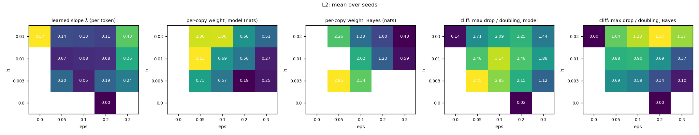</div>
      <figcaption class="caption">L2 with ALiBi, mean of 3 seeds per cell. Blank cells are settings where the boundary falls outside the probed gaps (2–128 pairs), so the per-copy weight is undefined.</figcaption>
    </figure>
    <p>The boundary moves in the right direction but by too little. With 2 recent copies at h = 0.01, as ε rises from 0.05 to 0.3 the model's switch-over gap goes 20 → 38 → 56 → 70 pairs, while Bayes's goes 16 → 58 → 160 → 253 (theory; the probes confirm the first two). Across the grid, Bayes places the switch anywhere from 0 to several hundred pairs; the models keep it between about 7 and 90.</p>
  </section>

  <section id="laws">
    <h2>What we can state concretely</h2>
    <div class="law">
      <div class="law-head"><h3>Prop. 2 boundary</h3><span class="pill good">confirmed</span></div>
      <div class="formula">pick w ⇔ log(h·G) &gt; log V − n_w·log((1−ε)/ε)</div>
      <p>The exact oracle matches each consequence: per-copy weight 2.948 measured vs 2.944 predicted (h = 0.003, ε = 0.05); switch-over gaps 52, 52, 52 for 2, 4 and 8 old copies; gaps within 9–26% of the formula where its small-hG approximation applies.</p>
    </div>
    <div class="law">
      <div class="law-head"><h3>Behaviour = Bayes filter with miscalibrated parameters</h3><span class="pill good">best fit in 75 of 84 models</span></div>
      <div class="formula">model log-odds ≈ a + b · LO_Bayes(h′, ε′),   h′ ≈ 1.45 · h^0.74,   logit ε′ ≈ −0.35 + 0.44 · logit ε</div>
      <p>Held-out median R² 0.85–0.95 per architecture, against 0.37–0.74 for the single-kernel counter. This is the paper's central behavioural formula; the two laws below are its consequences.</p>
    </div>
    <div class="law">
      <div class="law-head"><h3>Mechanism = sum of Prop. 1 counter heads</h3><span class="pill good">measured, median R² 0.90–0.99</span></div>
      <div class="formula">logit(c) − logit(w) ≈ Σ_heads γ_h · (A_c^h − A_w^h) + const</div>
      <p>A_c and A_w are each copy head's measured attention to the old and recent copies. For ALiBi heads the attention decays exponentially with distance at exactly the learned slope (r = 0.990), with an extra discount for typo-variant copies.</p>
    </div>
    <div class="law">
      <div class="law-head"><h3>The effective switch rate is set by the heads' fading rates</h3><span class="pill good">causal, 56 of 57 models</span></div>
      <div class="formula">ALiBi slopes × 0.5 / × 1 / × 2  →  h′ = 0.030 / 0.055 / 0.109 (median),  Δ loss ≈ +0.006 / 0 / +0.016 nats</div>
      <p><em>(Corrected by the audit.)</em> The trained slopes are at the ordinary-data loss minimum in all 85 ALiBi models; the elasticity of h′ to the slope scale is about 1.1–1.2 for 2-layer attention-only models (overall median 1.29). Calibrating h′ needs about ×0.44 on the slopes and costs a median +0.044 nats. The miscalibration is loss-optimal for these heads, not cheap slack.</p>
    </div>
    <div class="law">
      <div class="law-head"><h3>Models use about half the exact Bayes evidence per recent copy</h3><span class="pill warn">corrected by the audit</span></div>
      <div class="formula">model per-copy weight ≈ 0.08 + 0.31 · log((1−ε)/ε)</div>
      <div class="table-wrap">
        <table>
          <thead><tr><th>Setting (h, ε)</th><th>Model</th><th class="bayes">Bayes, measured</th><th class="bayes">Theory log((1−ε)/ε)</th></tr></thead>
          <tbody>
            <tr><td>0.003, 0.05</td><td>0.73</td><td class="bayes">2.95</td><td class="bayes">2.94</td></tr>
            <tr><td>0.003, 0.10</td><td>0.57</td><td class="bayes">2.34</td><td class="bayes">2.20</td></tr>
            <tr><td>0.01, 0.10</td><td>0.69</td><td class="bayes">2.02</td><td class="bayes">2.20</td></tr>
            <tr><td>0.01, 0.20</td><td>0.56</td><td class="bayes">1.23</td><td class="bayes">1.39</td></tr>
            <tr><td>0.01, 0.30</td><td>0.27</td><td class="bayes">0.59</td><td class="bayes">0.85</td></tr>
            <tr><td>0.03, 0.05</td><td>1.06</td><td class="bayes">2.26</td><td class="bayes">2.94</td></tr>
            <tr><td>0.03, 0.10</td><td>1.07</td><td class="bayes">1.38</td><td class="bayes">2.20</td></tr>
            <tr><td>0.03, 0.20</td><td>0.68</td><td class="bayes">1.00</td><td class="bayes">1.39</td></tr>
            <tr><td>0.03, 0.30</td><td>0.51</td><td class="bayes">0.48</td><td class="bayes">0.85</td></tr>
          </tbody>
        </table>
      </div>
      <p class="caption">Nats by which one extra recent copy shrinks ln G*, at n_c = 2; mean of 3 seeds. The fitted line uses the theory value log((1−ε)/ε) (R² = 0.64), but the verification audit showed that value is exact only when h·G* is small (≤ 2% error for h·G* ≤ 0.3) and overstates the exact Bayes weight by 30–55% when h·G* ≈ 1–3, as in several of these settings. Against the exact Bayes weight measured on the same probes (middle column), the models carry 0.24–1.06× of it (median 0.46×). The shortfall is largest when typos are rare. An earlier version of this report said "about a third"; that compared with the theory value and overstated the gap.</p>
    </div>
    <div class="law">
      <div class="law-head"><h3>The switch is always steeper than Bayes</h3><span class="pill good">holds in 12 of 12 settings</span></div>
      <p>The model-to-Bayes cliff ratio is 1.23 at minimum, 3.54 at the median and 11.5 at the maximum, largest when switches are rare. This is a consistent inequality, not yet a formula.</p>
    </div>
    <div class="law">
      <div class="law-head"><h3>The boundary is compressed</h3><span class="pill warn">weak fit, R² = 0.30</span></div>
      <div class="formula">G*_model ≈ 8.2 · (G*_Bayes)^0.32</div>
      <p>The exponent well below 1 matches the "too fixed" description, and the two agree near 22 pairs. The fit is too loose (72 boundaries) to claim as a law.</p>
    </div>
    <div class="law">
      <div class="law-head"><h3>The learned slope follows the switch rate</h3><span class="pill bad">withdrawn inside mixed regimes</span></div>
      <p>It separates the pure regimes clearly (0.002 with no switches, 0.57 with switches only), but across the 12 mixed settings it does not follow h (fitted power −0.09, R² 0.03). At h = 0.003, seeds split between slopes of about 0.06 and 0.26, so the single strongest induction head is not a stable readout there.</p>
    </div>
  </section>

  <section id="hypotheses">
    <h2>Hypotheses, updated</h2>
    <div class="score">
      <div class="verdict">
        <div class="verdict-head"><h3>(a) 2-layer attention-only models count old copies</h3><span class="pill warn">depends on encoding</span></div>
        <p>A second old copy moves ALiBi models 2.5–8× more than Bayes, but L3 with RoPE is close to Bayes (0.07 vs 0.06). Not a general property.</p>
      </div>
      <div class="verdict">
        <div class="verdict-head"><h3>(b) MLPs or a third layer move models toward Bayes</h3><span class="pill warn">partly</span></div>
        <p>A third layer lowers the excess loss with every encoding, and with ALiBi it also roughly halves the cliff. With RoPE the cliff stays about the same, and with learned positions it moves both ways. MLPs lower the excess loss but leave the cliff about as steep.</p>
      </div>
      <div class="verdict">
        <div class="verdict-head"><h3>(c) The learned slope rises with the switch rate</h3><span class="pill warn">between regimes only</span></div>
        <p>Holds between pure regimes; not within the mixed grid.</p>
      </div>
      <div class="verdict">
        <div class="verdict-head"><h3>Main finding: right regime, wrong boundary</h3><span class="pill good">robust</span></div>
        <p>Holds across three encodings, two depths, 12 settings and 3 seeds each, and survives enriched training in weaker form.</p>
      </div>
      <div class="verdict">
        <div class="verdict-head"><h3>RQ1: a trained head is a discounted counter (Prop. 1)</h3><span class="pill good">confirmed per head, with a content term</span></div>
        <p>Each copy head's output is linear in its attention to old vs recent copies; ALiBi heads decay at their learned slope, and changing that slope moves the decision as predicted. The attention also discounts typo-variant copies, which a pure distance counter lacks; that is why a counter formula fails on behaviour.</p>
      </div>
      <div class="verdict">
        <div class="verdict-head"><h3>RQ2: counter rule or Bayes rule?</h3><span class="pill good">Bayes form, wrong parameters</span></div>
        <p>The models' input–output map has the Bayes shape (fitted Bayes wins for 75 of 84 models) but with h′ too high and ε′ pulled toward 0.25. The miscalibration shrinks with RoPE, depth and conflict training.</p>
      </div>
    </div>
  </section>

  <section id="caveats">
    <h2>Caveats</h2>
    <ul>
      <li><strong>The fitted h′ and ε′ are a description, not a claim about the model's internals.</strong> They summarize the input–output map; the mechanism is the sum of counter heads. The two parameters can partly trade off, but they are tight across seeds (see table).</li>
      <li><strong>Content effects are measured on probes only.</strong> The typo-variant discount and duplicate down-weighting were separated from distance with the swapped layout, but we have not yet traced which earlier heads supply that information.</li>
      <li><strong>Test 1 used a bad control</strong> (see run 3). The causal claims rest on tests 1b and 2.</li>
      <li><strong>Scale is still small.</strong> Width 256 and 60k steps were tested at two settings with 2 seeds; RoPE models become close to calibrated with width, so the size of the miscalibration may shrink further in larger models.</li>
      <li><strong>ALiBi kernel match is partly by construction.</strong> ALiBi adds −λ·d to every score, so an exponential kernel at the learned slope is expected once the content part of the score is equal across copies. The informative part is that the content part <em>is</em> equal, and that the heads' output is linear in attention.</li>
      <li><strong>Learned slope comes from one head.</strong> It is unstable across seeds in some settings and uninformative for MLP models.</li>
      <li><strong>Probe layouts.</strong> Spacings 2, 4 and 8 and the swapped layout give the same fitted h′ and ε′ (within 2× in 97% of cases), so the description is not an artifact of one layout.</li>
      <li><strong>One task family.</strong> 16 keys, 64 values, 256 pairs, structured typos z → z+1.</li>
      <li><strong>No models without positional encoding.</strong> They did not train in the budget; that failure is itself worth one sentence in the paper.</li>
    </ul>
  </section>

  <section id="next">
    <h2>Next steps</h2>
    <ol>
      <li><strong>Decompose the remaining computation.</strong> In models with only the previous-token head left in layer 0, split the copy heads' query–key product into token-identity, position and match terms, and find which one bends the distance kernel.</li>
      <li><strong>Optional transfer test</strong> on pretrained Pythia models with the same conflict probes.</li>
      <li><strong>Write the workshop paper</strong> around: "induction heads are content-aware discounted counters that together act as a miscalibrated Bayes filter; the miscalibration is set by the heads' fading rates and is what ordinary-data loss prefers for them".</li>
    </ol>
  </section>

  <div class="run-divider">Run 1 · first run, 4 October · 38 runs</div>

  <section id="run1">
    <h2>First run (kept for reference)</h2>
    <p>The gate (h = ε = 0, L2, 2 seeds) reached 100% accuracy on repeat sightings and matched the Bayes floor of 0.259 nats to within 0.0001. Then four points × three architectures × three seeds:</p>
    <div class="table-wrap">
      <table>
        <thead><tr><th>Point</th><th>h</th><th>ε</th><th>Role</th><th>Bayes G* from formula (n_w = 1, 2, 3)</th></tr></thead>
        <tbody>
          <tr><td>A</td><td>0</td><td>0.2</td><td class="txt">structured typos only</td><td>never switch</td></tr>
          <tr><td>B</td><td>0.03</td><td>0</td><td class="txt">switches only</td><td>switch immediately</td></tr>
          <tr><td>C</td><td>0.01</td><td>0.1</td><td class="txt">mixed</td><td>208, 58, 8</td></tr>
          <tr><td>D</td><td>0.03</td><td>0.2</td><td class="txt">mixed</td><td>93, 53, 23</td></tr>
        </tbody>
      </table>
    </div>
    <div class="table-wrap">
      <table>
        <thead><tr><th>Excess loss over Bayes (nats)</th><th>A</th><th>B</th><th>C</th><th>D</th></tr></thead>
        <tbody>
          <tr><td>L2</td><td>0.001</td><td>0.001</td><td>0.016 <span class="sd">± 0.003</span></td><td>0.021 <span class="sd">± 0.002</span></td></tr>
          <tr><td>L2+MLP</td><td>0.001</td><td>&lt; 0.001</td><td>0.004 <span class="sd">± 0.001</span></td><td>0.005 <span class="sd">± 0.000</span></td></tr>
          <tr><td>L3</td><td>0.001</td><td>&lt; 0.001</td><td>0.005 <span class="sd">± 0.000</span></td><td>0.005 <span class="sd">± 0.000</span></td></tr>
        </tbody>
      </table>
    </div>
    <figure>
      <div class="frame">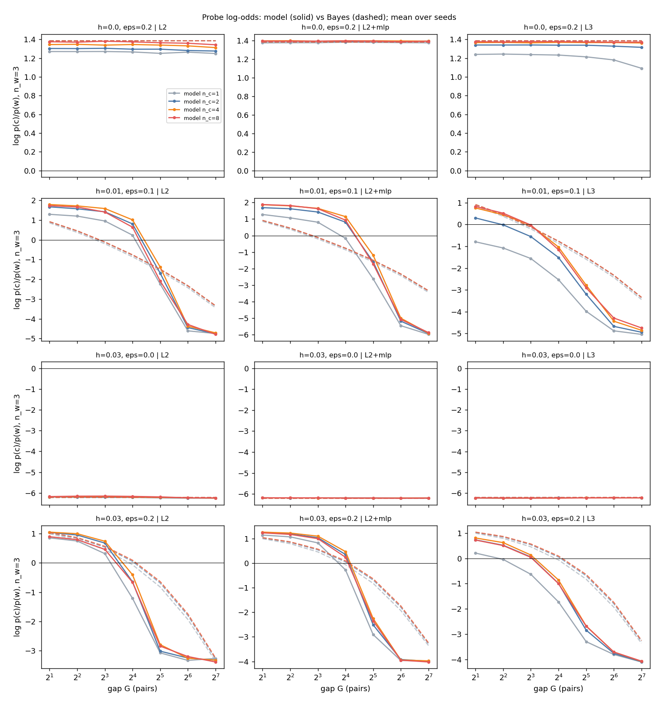</div>
      <figcaption class="caption">Run 1 probes, 3 recent copies, all with ALiBi. This is where the abrupt switch was first seen. Point A was later found to be a weak test: with structured typos, a head can learn that a copied c+1 is also evidence for c.</figcaption>
    </figure>
    <figure>
      <div class="frame">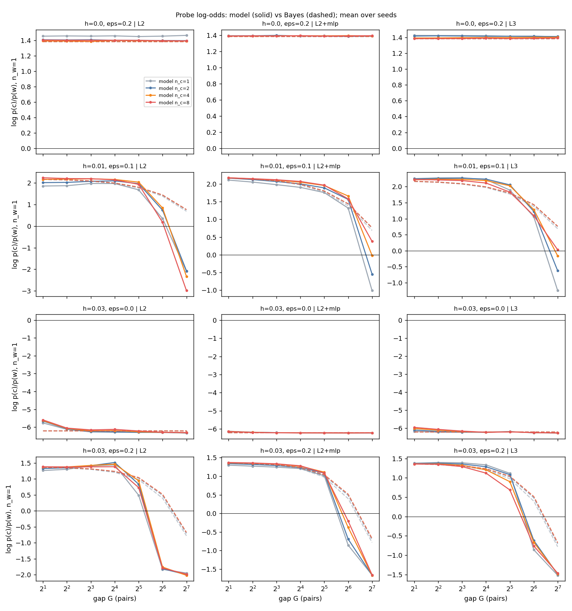</div>
      <figcaption class="caption">One recent copy. At point C and a gap of 128, Bayes still keeps the old value (+0.76) while all models have switched (L2 −2.07, L2+MLP −0.55, L3 −0.63).</figcaption>
    </figure>
    <p class="caption">Run-1 statements that run 2 revised: the learned-slope ordering (A 0.002 &lt; C 0.08 &lt; D 0.12 &lt; B 0.57) does not extend to the full grid; the "counting old copies" signature depends on the positional encoding; and the per-copy weight does adapt to ε within a fixed h, at about a third of the Bayes rate.</p>
  </section>

  <section id="reproduce">
    <h2>Reproducing</h2>
    <p>Code is in <code>recfreq/</code> (data generator, exact Bayes oracle, model with ALiBi, RoPE and learned positions, training with optional conflict enrichment, probes, analysis); 20 unit tests pass. Server runs live in <code>~/recfreq/results/runs/</code>.</p>
<pre>python -m pytest -q
python scripts/queue.py configs/E0.json --max-parallel 2          # gate
python scripts/queue.py configs/E1.json --max-parallel 4          # run 1
bash scripts/overnight.sh                                         # run 2 (E2a, E2c, E2u, E2b)
python -m recfreq.analyze results/runs --exp E1,E2b --out figs_E2b</pre>
  </section>

  <footer>Run 1 took about 4 hours and run 2 about 7.5 hours on the A6000, 4 jobs at a time, alongside a shared service holding most of the GPU's memory.</footer>
</main>
